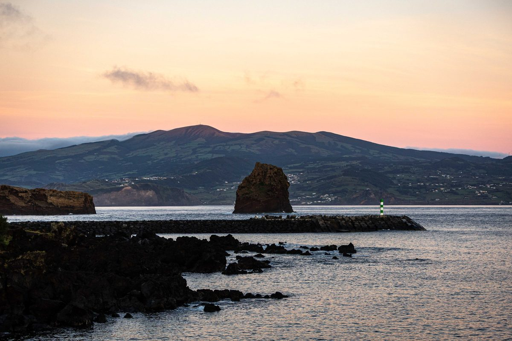
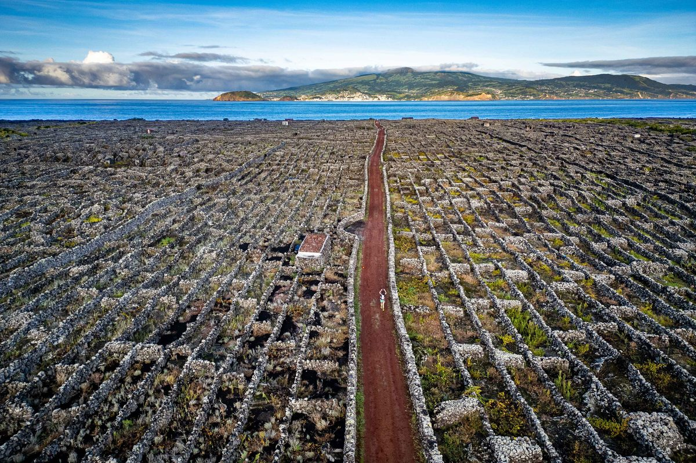
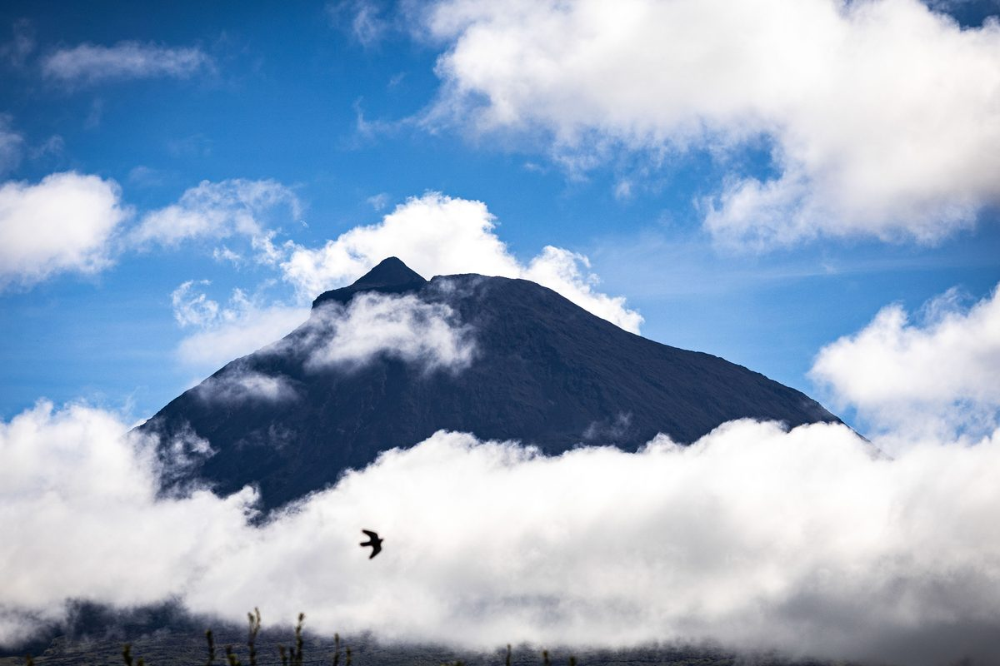

Em 30 segundos
O que torna esta etapa diferente das outras duas.
Parte junto ao mar, na Madalena, e acaba na Casa da Montanha, a 1 233 m. É quase sempre a subir.
—
Na Criação Velha (km 13,3), no meio das vinhas, com barreira às 11:00.
Barco da Horta para a Madalena. A mala entrega-se no terminal e segue para São Jorge.
O percurso
Passa o rato ou o dedo pelo perfil. Arrasta sobre ele, ou usa as pegas por baixo, para ver um troço em pormenor. Duplo clique repõe a etapa inteira. A zona cinzenta é a parte que fazes de noite, com o tempo que escolhes em «O meu plano».
Por cima de cada ponto, a tua hora, com o tempo que escolhes em «O meu plano». Em cada troço, os km, a subida e o tempo que levas.
Arrasta a janela (ou as pegas ‹ ›) no perfil pequeno para escolher o troço que queres ver em pormenor. Também podes tocar noutro sítio do perfil pequeno, ou arrastar no perfil grande.
Toca num ponto do perfil ou do mapa para ver o que há lá.
GPX para o relógio
Um GPX feito para cada marca. Escolhe a marca e descarrega o percurso, com os abastecimentos e as barreiras. É o percurso de 2026, que se mantém em 2027.
- No telemóvel, escolhe a marca e carrega em «Descarregar o GPX».
- Abre o ficheiro descarregado (no iPhone, na app Ficheiros; no Android, em Transferências) e usa «Partilhar» ou «Abrir com».
- Escolhe a app do teu relógio (Garmin Connect, Suunto, COROS…), guarda o percurso e sincroniza o relógio.
do telemóvel para abrir aqui.
Pontos e horários
Escolhe o tempo que contas fazer. A hora prevista em cada ponto reparte esse tempo pelo esforço de cada troço (km + D+/100), e avisa quando ficas perto de uma barreira.
| Ponto | Altitude | Distância | Próximo abastecimento | A minha hora | Barreira | Serviços | ||
|---|---|---|---|---|---|---|---|---|
Subidas e descidas
As maiores do percurso, com o nome do sítio; em «Ver todas» estão todas as que têm 100 m de desnível ou mais. A categoria segue a regra do Strava: comprimento × inclinação média. A hora muda com o tempo que escolhes em «O meu plano».
A etapa
A primeira etapa do Triangle Adventure liga o mar à montanha. Parte do Clube Naval da Madalena, junto ao porto, e sobe pela Paisagem da Cultura da Vinha da Ilha do Pico, Património Mundial da UNESCO, até à Casa da Montanha, a 1 233 m.
O único abastecimento é na Criação Velha (km 13,3), com barreira às 11:00. Daí até à meta são quase 12 km quase sempre a subir, por caminhos rurais e trilhos, com a montanha do Pico à frente.
Na meta há transfers da organização para a Madalena, de hora a hora a partir das 13:00. O último sai às 15:00.
A ilha pelo caminho
Os sítios do Pico por onde esta etapa passa.

A porta de entrada do Pico para quem vem do Faial: o barco atravessa o canal em meia hora. A etapa parte junto ao porto, com os ilhéus da Madalena e o Faial à vista.
Fotografia: Matias Novo · Triangle Adventure 2026
Os currais de pedra negra, levantados à mão para abrigar as videiras do vento e do mar, formam a Paisagem da Cultura da Vinha da Ilha do Pico, Património Mundial da UNESCO desde 2004. O abastecimento fica no meio deles.
Fotografia: Matias Novo · Triangle Adventure 2026
Com 2 351 m, é o ponto mais alto de Portugal. A meta é na Casa da Montanha, a 1 233 m, onde começa o trilho para o cume.
Fotografia: Matias Novo · Triangle Adventure 2026O dia
Sexta, 29 de outubro. O dia começa cedo, no barco da Horta para a Madalena.
- quiQuinta, 28 de outubro: secretariado no Mercado Municipal da Horta, das 18:00 às 22:00. Briefing às 19:30.
- 07:00Encontro no Terminal Marítimo da Horta e entrega da mala de viagem.
- 07:30Barco da Horta para a Madalena (chega às 08:00).
- 08:00Dorsais na Madalena, junto ao Clube Naval, para quem chega neste dia (até às 08:45).
- 09:00Partida, no Clube Naval da Madalena.
- 11:00Barreira na Criação Velha (km 13,3).
- 13:00Começam os transfers da Casa da Montanha para a Madalena, de hora a hora.
- 14:00Fecho da meta, na Casa da Montanha.
- 15:00Último transfer para a Madalena.
Material obrigatório
O mesmo nas três etapas. Mostra-se no secretariado e pode ser verificado na partida, no percurso e na meta.
- Dorsal, bem visível durante todo o percurso
- Mochila ou equipamento semelhante
- Recipiente de água, 0,5 l no mínimo
- Manta térmica (100 × 200 cm no mínimo)
- Corta-vento ou casaco impermeável
- Telemóvel ligado, com bateria e saldo
- Alimentação de reserva
- Apito
- Copo: não há copos nos abastecimentos
- Documento de identificação com fotografia
Número de emergência da prova: +351 961 665 221, impresso no dorsal. Se não conseguires falar com a organização, liga 112. Se desistires fora de um abastecimento, liga para o número da prova: o carro vassoura vai buscar-te.
Antes e durante a prova
O essencial do racebook. Em caso de dúvida, fala connosco no secretariado.
Três etapas, uma inscrição
- A inscrição é para as três etapas: não há inscrição numa etapa só.
- Levanta o dorsal no secretariado, com o documento de identificação. Quem chega no dia da primeira etapa levanta-o na Madalena, junto ao Clube Naval, das 08:00 às 08:45.
- O dorsal vai no peito ou na barriga, sempre à vista.
Barcos e malas
- Os barcos entre as ilhas estão incluídos na inscrição. Os acompanhantes compram o bilhete na Atlânticoline.
- De manhã, entregas a mala no terminal marítimo e a organização leva-a para a ilha seguinte.
- Perder o barco é perder a etapa.
Semi-autonomia
- Entre abastecimentos, vais por tua conta: comida, roupa e material de segurança.
- Os abastecimentos têm água e comida para consumir no local. Não há copos: leva o teu.
- Só há ajuda de fora junto aos abastecimentos. É proibido ir acompanhado por quem não está inscrito.
Postos e marcação
- O tempo limite conta desde a partida da etapa. Quem chega a um posto depois da hora entrega o dorsal e sai da prova.
- Os postos são de passagem obrigatória. Falhar um posto dá desclassificação.
- Segue sempre a marcação. Se deixares de ver marcas durante cerca de 200 m, volta atrás até à última que viste.
Terreno duro, desnível elevado e tempo imprevisível: sol, chuva, frio, vento e nevoeiro. Cada atleta tem de saber gerir sozinho o cansaço e pequenas lesões. Aconselhamos um exame médico desportivo antes da prova.
A comunidade no Strava
O clube Azores Trail Run no Strava: o resumo da semana e as atividades mais recentes dos membros.
Inscrição
As inscrições do Triangle Adventure fazem-se na StopandGo. A inscrição é para as três etapas.